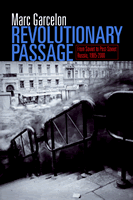

<body bgcolor="#FFFFFF" text="#000000" link="#0000FF" vlink="#CC0000" alink="#CC0000"><center><hr width="350" size="1" align="center" noshade>From perestroika to Putin: a recent history of Russia's turbulent transformation from communist to post-communist nation<hr width="350" size="1" align="center" noshade><p><a href="https://cdcshoppingcart.uchicago.edu/Cart/ChicagoBook.aspx?ISBN=9781592133611&&PRESS=temple" target="_top">Buy this book!</a> | <a href="https://cdcshoppingcart.uchicago.edu/Cart/Cart.aspx?PRESS=temple" target="_top">View Cart</a> | <a href="https://cdcshoppingcart.uchicago.edu/Cart/Cart.aspx?PRESS=temple" target="_top">Check Out</a></p><p></p></center><!--none//--><h1>Revolutionary Passage</h1>
<H2>From Soviet to Post-Soviet Russia, 1985-2000</H2>
<h3>Marc Garcelon</h3>
<P>cloth 1-59213-361-4 $80.50, Jun 05, <FONT COLOR=#990033>Available</FONT>
<br>paper 1-59213-362-2 $30.95, Jun 05, <FONT COLOR=#990033>Available</FONT>
<br>Electronic Book 1-59213-363-0 $30.95 <FONT COLOR=#990033>Available</FONT>
<BR> 328 pp
6x9
3&nbsp;tables 5&nbsp;figures 2&nbsp;halftones
</P><BLOCKQUOTE><I>"Garcelon's extensive examination of </i>DemRossiia<i> during the critical 'interregnum' period is novel. His writing is clear and crisp, and his rigorous conceptualization and judicious interpretations, along with his rich fieldwork experience and interview data, are admirable."</i>
<br>&#151<b>Michael Urban</b>, Professor of Politics, University of California, Santa Cruz<i></I></BLOCKQUOTE>
<p><i>Revolutionary Passage</i> is a cultural, social, and political history of Russia during its critical period of transformation at the end of the twentieth century. Marc Garcelon traces the history of <i>perestroika</i> and the rise of Vladimir Putin, arguing that the pressure Mikhail Gorbachev's reforms put on the Soviet system gave birth to movements for democratic change. He also shows that the very political arrangements that prompted the fall of Communism also killed hopes for subsequent reform.
<p>At the turning point of this political revolution stood Democratic Russia, or <i>DemRossiia</i>, the principal organization of the Russian democratic movement that helped to dismantle the Soviet system and force the Soviet leadership to change course. However, as post-Soviet Russia committed itself to globalization and U.S.-style economic reforms, the country directed itself away from the Democratic reforms called for by organizations like <i>DemRossiia</i>, and such groups collapsed. <i>Revolutionary Passage</i> provides a close examination of the <i>DemRossiia</i>. Garcelon deftly illuminates the rise and decline of this organization, and how the processes of revolutionary change impacted both Russia and the world.
<BR>&nbsp;<h2>Excerpt</h2><P>Excerpt available at <a href="http://www.temple.edu/tempress">www.temple.edu/tempress</a></p>
<BR>&nbsp;<h2>Reviews</h2>
<p><i>"</i>Revolutionary Passage<i> is an outstanding account of the whole epoch starting with Gorbachev's reforms through the years of Boris Yeltsin until Putin's accession to power by late 1999. The book is excellent, a tour-de-force, and lucidly presented. Garcelon makes an important contribution to the understanding of the role the educated middle class, intellectuals, and experts played during Gorbachev's reforms, and how they were abandoned by Yeltsin. </i>Revolutionary Passage<i> offers a fine-tuned presentation of social structure of the late Soviet Union and the early years of post-Soviet Russia."</i>
<br>&#151<b>Ivan Szelenyi</b>, William Graham Sumner Professor of Sociology and Professor of Political Science, Yale University
<p><i>"The book is helpful in recalling and explaining what transpired in that turbulent period."</i>
<br>&#151;<b><i>Slavic Review</i></b>
<p><i>"This book is thus to be recommended as an appealing investigation of how Putin’s presumed self-assurance on the political stage is just as much a product of the malfunctioning that preceded it."</i>
<br>&#151;<b><i>The Modern Language Review</i></b>
<p><i> "Garcelon presents a detailed examination of an important story: the rise and fall of the Democratic Russia movement (DR). He demonstrates persuasively that the unleashing of perestroika precipitated the creation of an asymmetrical matrix of political opportunities that was advantageous to political entrepreneurs networking within the ranks of the Moscow-based intelligentsia....[O]ne of Garcelon’s major accomplishments is that his carefully crafted research, which illuminates the organizational genesis of DR and the social profile of its activists, provides a useful map of politically mobilized, late-Soviet Moscow. The other accomplishment for which Garcelon should be commended is his cogent analysis of DR’s heterogeneity."</i>
<br>&#151;<b><i>Perspectives on Politics</i></b>
<p><i>"Garcelon successfully employs the feudal model as an explanation for the failure of central authority and the later rise of violent oligarchies by the last 1990s in Russia....This work with its feudal paradigm provides both a valuable reference for the period as well as a new methodology for examining Russia’s political and economic future."</i>
<br>&#151;<b><i>Sibrica</i></b>
<BR>&nbsp;<h2>Contents</h2><P>
<p>List of Acronyms and Russian Terms
<br>Acknowledgments
<br>Introduction: Passages
<br>1. The Specialist Rebellion in Moscow and the Genesis of a Revolutionary Situation
<br>2. The Rise of Democratic Russia
<br>3. Democrats on the Offensive
<br>4. August 1991 and the Decline of Russia's Democratic Movement
<br>5. Interregnum
<br>Appendix: English Translation of Russian Questionnaire Used in the Survey in Chapter One
<br>Notes
<br>Bibliography
<br>Index
</P><BR>&nbsp;<H2>About the Author(s)</H2>
<P><b>Marc Garcelon</b> is an Assistant Professor in the Department of Sociology and Anthropology at Middlebury College.</P>
<BR><H2>Subject Categories</H2>
<p><A HREF="/tempress/sociology.html" TARGET="_top">Sociology</a>
<BR><A HREF="/tempress/political.html" TARGET="_top">Political Science and Public Policy</a>
<BR><A HREF="/tempress/history.html" TARGET="_top">History</a>
</p>
<BR><h2 class="inpageheading">In the series</H2>
<P><I><a href="http://www.temple.edu/tempress/phsc.html" onMouseOver="window.status='Click for other books in this series!'; return true;" onMouseOut="window.status=''; return true;" target="_top">Politics, History, and Social Change</a></i>, edited by John C. Torpey.
</p><p>This series will disseminate serious works that analyze the social changes that have transformed our world during the twentieth century and beyond. The main topics to be addressed include international migration; human rights; the political uses of history; the past and future of the nation-state; decolonization and the legacy of imperialism; and global inequality. The series will also translate into English outstanding works by scholars writing in other languages.</p>
<p align="center"><a href="https://cdcshoppingcart.uchicago.edu/Cart/ChicagoBook.aspx?ISBN=9781592133611&&PRESS=temple" target="_top">Buy this book!</a> | <a href="https://cdcshoppingcart.uchicago.edu/Cart/Cart.aspx?PRESS=temple" target="_top">View Cart</a> | <a href="https://cdcshoppingcart.uchicago.edu/Cart/Cart.aspx?PRESS=temple" target="_top">Check Out</a></p><p><font face="Arial" size="1"><a href="copyright.html" onMouseOver="window.status='Web Copyright Policy';return true;" onMouseOut="window.status=''" title="Web Copyright Policy">&copy;</a> 2015 <a href="http://www.temple.edu" target="new" onMouseOver="window.status='Link to Temple University home page';return true;" onMouseOut="window.status=''" title="Link to Temple University home page">Temple University</a>. All Rights Reserved. http://www.temple.edu/tempress/titles/1791_reg.html</font></p>